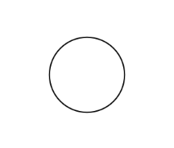
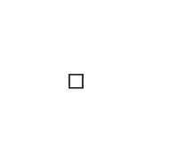
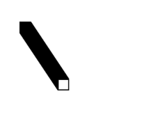

Draw a circle such that the x-position, y-position, and the radius are all defined using variables. To achieve this, you must define three variables posX, posY, and radius. The first two variables should have an initial value of 50, and the latter should have a value of 15.
Expected Output:
😒 Nothing impressive, right?
Now, let's copy the code from the previous example and make a small change. After creating the circle, let's increase the value of the variable radius by a factor of 0.1.
Expected Output:
😲 What is happening? Since draw() is an infinite loop, the radius is being incremented at every new frame, which makes the circle seem to constantly enlarge.
This is already more interesting. Let's keep experimenting 👩🏾🔬.
Draw a square with a width of 10 at the origin of the canvas (both x and y coordinates at 0). After drawing the square, increase the values of the x and y variables by a factor of 0.2 and 0.3, respectively.
Expected Output:
Another experiment 🧪, let's copy the code from the previous task and move the background(...); from the draw() function to the setup() function.
Expected Output:
Draw a circle just as we did in the first task, however now let's try to set the radius as a constant, and try changing the value of the radius after definition and see what happens.
‼️ 🚨 A constant is ... well constant, it cannot be redefined after initialisation.
Create a circle again using variables, however this time define the radius variable inside the setup() function - in another function.
🤔 What happened?
The radius variable is defined within the setup() function and therefore its scope is only within such function. This means that outside this function, the variable radius doesn't exist and so it cannot be used ☹️.
Variables defined outside of any function are said to be globally defined, while variables defined within a function or {} braces (a block) are said to be defined locally.